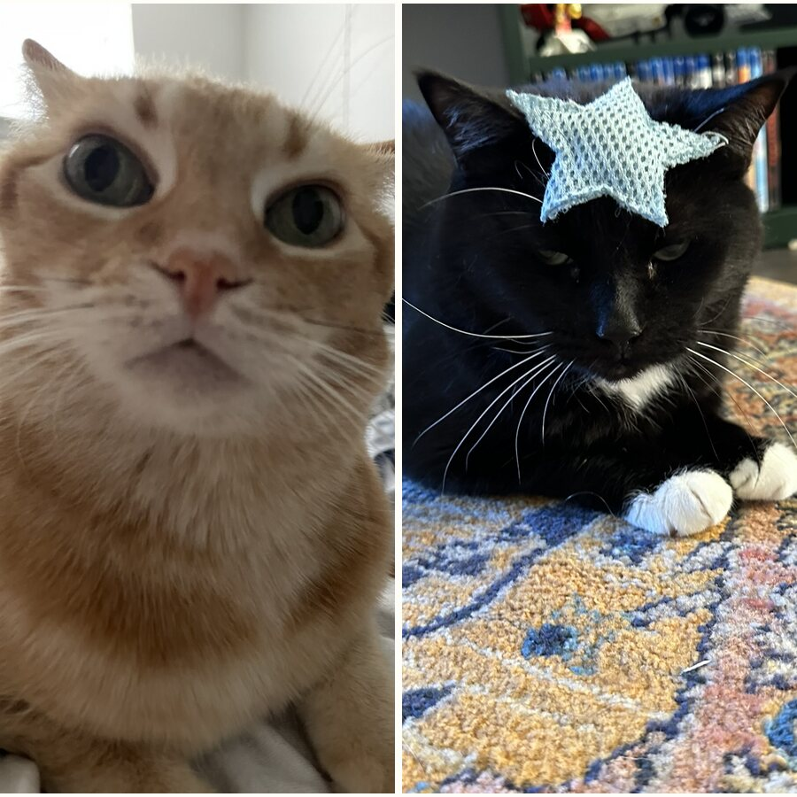
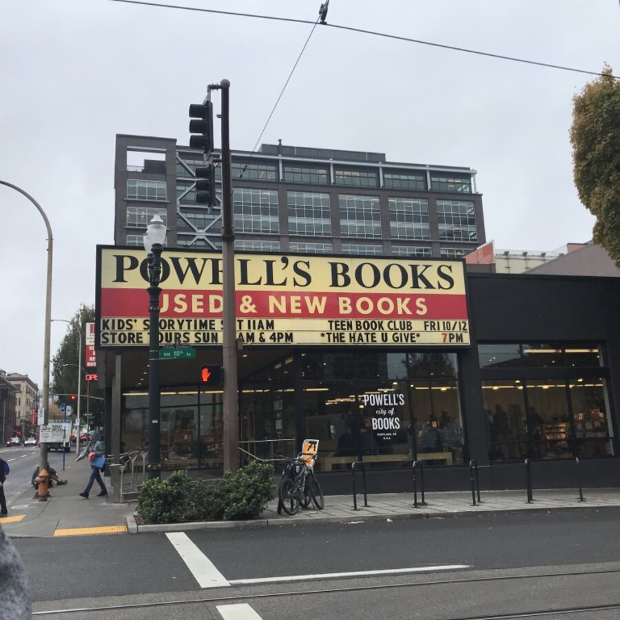
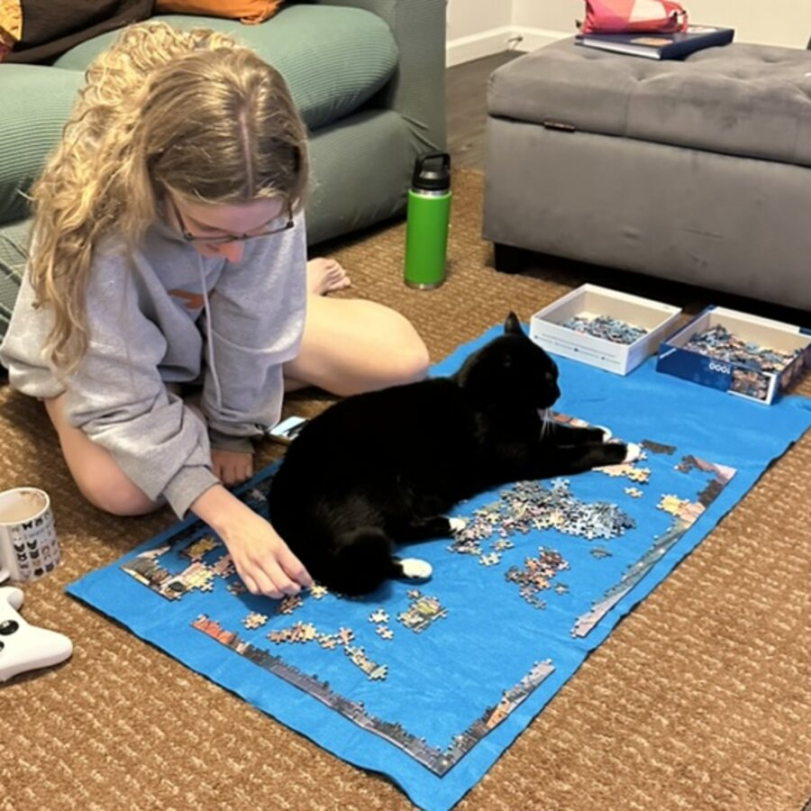

About Me
I study how everyday experiences, like daily activity, stress, personal relationships, and the contexts we live in, shape cognitive health and well-being in mid- to late life. I work with Dr. Elizabeth Muñoz on the Cognition, Health, and Aging Research Team (CHART) studying early predictors of cognitive health.
Research Interests
Methods Expertise
Education
-
2020
B.S., Psychology and Sociology
Arizona State University
summa cum laude - 2024 M.A., Human Development and Family Sciences The University of Texas at Austin
-
Now
Ph.D., Human Development and Family Sciences
The University of Texas at Austin
Advisor: Dr. Elizabeth Muñoz
Outside the Lab
- I live to annoy my two very weird cats.

- I spend the weekend perusing bookstores.

- I love to (try) and puzzle when I have the space!
